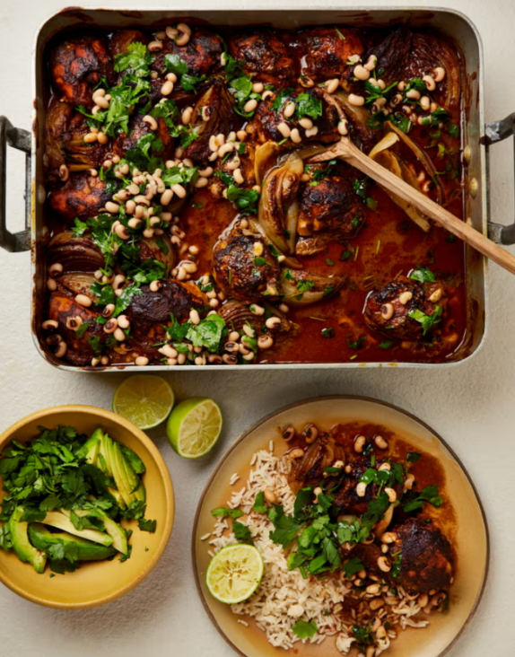

Spicy chipotle chicken with black-eyed bean salsa

I’ve gone chipotle-heavy in this mole-inspired recipe. The chilli mellows a bit during the cooking, but if you prefer less heat, just reduce the amount of chilli to taste. Serve with rice, slices of ripe avocado and soured cream, if you like
For the marinade
For the bean salsa
To serve
Put all the marinade ingredients in a food processor or blender, add two teaspoons of salt and a good grind of pepper, then blitz smooth and pour into a large bowl. Add the chicken, toss to coat, then set aside for at least an hour to marinate (or put it in the fridge overnight).
Heat the oven to 220C (200C fan)/425F/gas 7. Spread the chicken, all its marinade and the onion segments over the base of a large 30cm x 40cm oven tray. Roast for an hour, basting once halfway, until the chicken is tender, the onions have softened and the oil has separated from the marinade. Take the tray out of the oven, cover with foil and leave to rest for 10 minutes.
Meanwhile, make the salsa. Put the beans, lime juice, oil and half a teaspoon of salt in a bowl and mix well. Just before serving, stir in the coriander, then spoon half the salsa over the chicken. Serve the rest of the salsa on the side with plain rice and lime wedges.